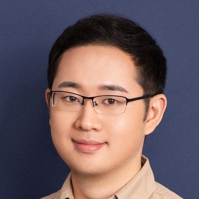

回到
授课教师
刘缘 香港科技大学
崔兆鹏 浙江大学
郭裕兰 中山大学
申抒含 中科院自动化所
江腾飞 杭州先临

王泽宇 香港科技大学（广州）
陈安沛 西湖大学
黄然 华为
课程题目： 课程导论与3D表达概览
授课讲者： 刘利刚，中国科学技术大学
讲者简介：
中国科学技术大学教授。从事计算机图形学及CAD/CAE方向研究。曾获国家自然基金委“杰出青年”项目资助；曾获中国计算机图形学杰出奖，Siggraph
Asia时间检验奖、陆增镛CAD&CG高科技奖一等奖、国家自然科学二等奖等奖项。任中国工业与应用数学学会几何设计与计算专业委员会主任、国际几何建模与处理协会指导委员会委员、亚洲图形学协会副主席。
讲者主页： http://staff.ustc.edu.cn/~lgliu/
E-mail： lgliu@ustc.edu.cn
课程题目： TBD
授课讲者： 刘缘，香港科技大学
讲者简介： ...
讲者主页： ...
E-mail： ...
课程题目： 可微渲染技术在游戏中的应用
授课讲者： 杨克微，网易
讲者简介：
2017年博士毕业于南京大学计算机科学与技术系，2018年初加入网易。期间他作为可微渲染资产优化管线的负责人，带领团队从无到有拓展和丰富了可微渲染在游戏中的应用范围，深入一线了解项目需求，形成了模型及切换距离优化、Billboard/Impostor优化、贴图及UV优化、渲染管线优化和代理体优化几大业务线，有效提升了游戏性能和渲染效果，节省了优化环节所需的大量人力。部分相关技术已在公司内广泛应用，累计落地项目超15个，并带领团队发表2篇AI国际顶会论文，1项AI国际比赛冠军、6项互娱技术创新奖和专利6项。
讲者主页： https://ailab.netease.com/
E-mail： yangkewei@corp.netease.com
课程题目： 传统几何表达
授课讲者： 傅孝明，中国科学技术大学
讲者简介：
中国科学技术大学数学科学学院副教授、博士生导师。分别于2011、2016年在中国科学技术大学获得学士、博士学位，2016年至2021年于中国科学技术大学任特任副研究员。研究领域为计算机图形学与计算机辅助设计，研究方向为几何处理、优化、建模、制造等。已在领域顶刊ACM
ToG/SIGGRAPH/SIGGRAPH Asia上发表28篇论文，获2024年SMA Young Investigator
Award、2024年安徽省应用数学青年科技奖、2023年安徽省青年数学奖、2022年入选中国科学院“青年创新促进会”。
讲者主页： http://staff.ustc.edu.cn/~fuxm/
E-mail： fuxm@ustc.edu.cn
课程题目： 三维扫描与重建：从两视图立体匹配到前馈式三维恢复
授课讲者： 崔兆鹏，浙江大学
讲者简介：
浙江大学计算机科学与技术学院“百人计划”研究员、博士生导师，国家级青年人才计划入选者。2017年至2020年在瑞士苏黎世联邦理工学院计算机视觉和几何实验室任高级研究员。研究方向为三维计算机视觉，具体包括三维重建、三维理解、SLAM、三维生成和三维运动规划等。近年来在计算机视觉、机器人、计算机图形学、机器学习等领域的顶级期刊和会议上发表论文60余篇，曾主持国家自然科学基金面上、专项项目等。目前担任Pattern
Recognition、IEEE RA-L等国际期刊编委，曾担任领域内顶级会议CVPR、ECCV、IJCAI领域主席，SIGGRAPH程序委员会委员，以及ICRA、IROS副编委等。曾获ICRA
2020机器视觉最佳论文提名、IROS 2021安全、安保和救援机器人最佳论文提名、3DV 2024最佳论文荣誉提名。
讲者主页：
https://zhpcui.github.io/
E-mail： zhpcui@zju.edu.cn
课程题目： 3D形状理解与分析
授课讲者： 郭裕兰，中山大学
讲者简介：
中山大学电子与通信工程学院教授，博士生导师，国家高层次青年人才。主要研究领域为空间智能与三维视觉，包括三维重建、理解、生成及机器人系统。主持国家自然科学基金联合重点项目等10余项，在IEEE
TPAMI和CVPR等期刊和会议发表学术论文200余篇，谷歌学术总被引2.7万余次，入选Clarivate全球高被引科学家、Elsevier中国高被引学者，获中国计算机学会自然科学一等奖、吴文俊人工智能优秀青年奖等奖励。担任中国图象图形学学会三维视觉专委会副主任，IEEE
Transactions on Image Processing高级领域编辑（SAE）。曾担任首届中国空间智能大会主席，历届中国三维视觉大会组委会主席，CVPR、ICCV、ECCV、NeurIPS、ICML、ACM
Multimedia等国际会议领域主席。
讲者主页： https://www.yulanguo.cn/
E-mail： guoyulan@sysu.edu.cn
课程题目： 城市场景结构化三维重建
授课讲者： 申抒含，中科院自动化所
讲者简介：
中国科学院自动化研究所研究员、博士生导师，中国科学院大学人工智能学院岗位教授，中国科学院工业视觉工程实验室副主任，工业具身智能北京市重点实验室副主任。研究领域为三维计算机视觉，包括大规模场景三维重建、具身机器人三维感知、场景结构化三维建模等。在计算机视觉、摄影测量、机器人等领域国际期刊和国际会议，如IEEE
TPAMI/TIP、IJCV、ISPRS
Journal、CVPR、ICCV、ECCV、ICRA、IROS等发表论文100余篇。作为项目负责人主持国家自然科学基金联合重点项目、北京市自然科学基金联合重点项目、以及各类企业研发项目20余项。曾获CVPR、SIGGRAPH、CAD/CG等会议三维视觉国际竞赛冠军6次，曾获中国自动化学会、中国图像图形学会、中国测绘学会、中国地理信息产业协会科学技术一等奖4次、二等奖1次。
讲者主页：
http://3dv.ac.cn/faculty/shs/
E-mail： shshen@nlpr.ia.ac.cn
课程题目： 交互式三维设计与建模
授课讲者： 王泽宇，香港科技大学（广州）
讲者简介：
香港科技大学（广州）信息枢纽计算媒体与艺术学域、人工智能学域助理教授，香港科技大学艺术与机器创造力学部助理教授，创意智能协同实验室负责人。于耶鲁大学计算机科学系获得博士学位，师从Julie Dorsey和Holly
Rushmeier教授；于北京大学智能科学系获得荣誉学士学位，师从查红彬和Katsushi Ikeuchi教授。研究方向为计算机图形学、人机交互、人工智能、数字文化遗产，已在包括TOG, SIGGRAPH,
TVCG, VR, CHI, ICCV, CVPR在内的重要国际期刊和会议上发表60余篇学术论文。担任SIGGRAPH Asia, Eurographics, Pacific
Graphics等国际会议的程序委员，CCF-CAD&CG, CCF-VRV, CSIG-3DV,
CSIG-IG等专委会和GAMES执行委员。入选国家级高层次青年人才、全国青联委员、CCF-腾讯犀牛鸟基金、Adobe研究基金，并获得最佳论文奖、多项最佳提名奖等荣誉。
讲者主页： https://zachzeyuwang.github.io/
E-mail： zeyuwang@ust.hk
课程题目： 神经渲染表达：几何和外观耦合
授课讲者： 陈安沛，西湖大学
讲者简介： 西湖大学助理教授、Inception3D实验室负责人。2016
年本科毕业于西安电子科技大学，2022年博士毕业于上海科技大学，之后于苏黎世联邦理工学院和图宾根大学从事博士后研究。研究方向聚焦在计算机图形学、三维视觉以及空间智能，致力于从二维图像中高效地感知三维世界，具体包括三维表征，内容合成和物理交互。
讲者主页： https://apchenstu.github.io/
E-mail： chenanpei@westlake.edu.cn
课程题目： 鸿蒙空间化和3DGS创新在鸿蒙上的0到1商用
授课讲者： 黄然，华为
讲者简介： 终端BG图形图像首席架构师，华为公司科学家，八级专家。
2007年北航计算机专业硕士毕业，先后就职于AMD、华为公司，图形领域已从事18年。 2016年加入华为终端，从事图形和游戏渲染相关开发工作， GPU
Turbo核心技术成员，鸿蒙图形栈架构师，负责统一渲染、2D/3D渲染等，并从0到1构建3DGS技术入端，发布Remy、空间影像壁纸等。当前作为终端图形TMG主任、图形媒体显示TMG主任，负责
单框架鸿蒙图形架构设计。
讲者主页： https://blog.csdn.net/huangranbj
E-mail： Frank.huangran@huawei.com
课程题目： 三维生成模型 (1) (2)
授课讲者： 王鹏帅，北京大学
讲者简介：
北京大学助理教授、博士生导师，入选北京大学博雅青年学者、北京市智源学者。研究方向为图形学、几何处理、三维深度学习。在学术会议SIGGRAPH（ASIA）、CVPR等上发表近30篇学术论文。担任著名图形学期刊IEEE
TVCG，Computers & Graphics的编委、著名图形学国际会议SIGGRAPH Asia、Eurographics、SGP等的会议程序委员。2023年获得亚洲图形学学会 (Asiagraphics)
青年学者奖，2025年获得中国三维视觉大会（China3DV）年度优秀青年学者奖、计算机辅助设计与图形学（CCF-CAD&CG） 青年科技奖，2026年获得 CVMJ 最佳论文奖。
讲者主页： https://wang-ps.github.io/
E-mail： wangps@hotmail.com
课程题目： 三维生成模型 (1) (2)
授课讲者： 张彪，西安交通大学
讲者简介：
本科及硕士毕业于西安交通大学，博士毕业于阿卜杜拉国王科技大学（KAUST），现在西安交通大学任教授。其研究方向为计算机图形学与机器学习的交叉领域，近期重点关注生成模型与表示学习。他曾在
SIGGRAPH、CVPR、ICCV、ICLR、NeurIPS 等会议发表论文。
讲者主页： https://1zb.github.io
E-mail： biao.z@outlook.com
课程题目： 3D大模型：从物体生成到世界模型
授课讲者： 王腾飞，腾讯混元
讲者简介： 腾讯混元世界模型负责人，带领团队从0搭建了混元世界模型的数据与算法体系，先后发布HY World
1.0、2.0、 WorldPlay、WorldMirror等多个模型。博士毕业于香港科技大学，研究方向为三维视觉与世界模型，已在人工智能顶级期刊和会议上发表论文 40 余篇，谷歌学术引用量 3500
余次，系列开源项目在 GitHub 累计星标 20000 余次，研究工作曾获评 ICCV 和 ECCV 最有影响力论文。
讲者主页： https://tengfei-wang.github.io/
E-mail： tfwang@connect.ust.hk
课程题目： 装配体和关节可动对象生成技术
授课讲者： 穆亚东，北京大学
讲者简介：
北京大学长聘副教授、北大博雅青年学者、北京智源学者，新闻出版智能媒体技术重点实验室副主任，先后在北京大学获得理学学士和理学博士学位。曾在新加坡国立大学、美国哥伦比亚大学、华为香港诺亚方舟实验室、美国电话电报公司研究院（AT&T
Labs）担任研究职位，主要研究领域为计算机视觉和机器人学，在CVPR等中国计算机学会论文推荐列表A类会议和T-PAMI等ACM/IEEE汇刊发表论文超过100篇，申请PCT、美国或中国专利40余项。获得陕西省自然科学一等奖、国际会议SIGIR最佳论文提名奖、北京大学京东方奖教金、杨王院士奖教金等。担任多媒体领域旗舰期刊IEEE
Transactions on
Multimedia编委，10余次担任人工智能领域核心会议（如CVPR、ICCV、ECCV）的组委会成员或领域主席。近期主要研究方向为多模态基础模型、视觉基础模型、三维重建与生成、具身智能体、机器人VLA模型等，代表性工作包括视觉生成模型LaVIT系列、pyramidFlow等。
讲者主页： http://www.muyadong.com/
E-mail： myd@pku.edu.cn
课程题目： 基于生成式AI的三维场景生成
授课讲者： 盛律，北京航空航天大学
讲者简介：
北京航空航天大学教授，博导，入选国家级青年人才、智源学者、小米青年学者、斯坦福全球前2%顶尖科学家排行榜单。主要研究方向为三维视觉、多模态大模型和具身智能。在IEEE TPAMI/ACM
TOG/IJCV以及CVPR/ICCV/ICLR/ECCV等重要国际期刊和会议发表论文80余篇，Google Scholar显示被引用数9400余次。现任ACM Computing
Surveys编委，CVPR/ICLR/ECCV/ACM
Multimedia/AAAI等领域主席，以及多个领域顶会顶刊审稿人和程序委员。CCF高级会员，任CCF和CSIG多个专委会执行委员，VALSE执行领域主席。主持或参与多项国家自然科学基金、科技部重点研发计划和省部级重点研发计划项目。
讲者主页： https://lucassheng.github.io/
E-mail： lsheng@buaa.edu.cn
课程题目： 教 AI 摆放世界：可控三维物体摆放与场景生成
授课讲者： 刘中远，腾讯游戏
讲者简介： 资深 AI 研究员、游戏开发者，长期专注于 AI
游戏与虚拟世界生成方向的探索，曾任游戏场景智能生成方向的项目负责人。本科与硕士毕业于鲁迅美术学院建筑艺术设计学院，博士毕业于中国科学技术大学数学科学学院计算数学专业，师从刘利刚教授。有美学/设计与算法工程的双重背景，研究兴趣涵盖计算机图形学、计算几何、智能制造、强化学习、多模态大模型以及多智能体协作系统，在
SIGGRAPH、TOG、AAAI、IEEE TVCG、Pacific Graphics、SPM
等国际会议与期刊发表多篇论文，近年来持续从事三维场景布局与智能体场景生成相关研究。曾主导并参与数字雕塑、建筑设计与智能制造等多个落地项目，相关作品曾入选全国美展，并获吉尼斯世界纪录、米兰设计大赛金奖等荣誉。长期致力于将艺术与设计需求高效地转化为由算法、代码、AI构建的自动游戏体验生产管线，通过技术创新推动数字艺术与智能领域的深度融合，为虚拟世界和具身智能打造高质量、可交互的艺术场景，希望做出能让人与AI在虚拟世界生活/冒险的，具有高质量游戏体验的，由AI智能体群负责运行与维护的原生AI游戏社交平台/引擎/数据库虚拟世界
讲者主页： https://digiartomnis.github.io/
E-mail： lockliu@tencent.com
课程题目： 面向具身智能的三维生成、世界模型与自主进化
授课讲者： 穆尧，上海交通大学
讲者简介： 上海交通大学长聘教轨助理教授，入选国家级青年人才计划，上海市海外高层次青年人才，智源青年学者，
EAI-100
2025学术新锐。博士毕业于香港大学计算机系，访学于苏黎世联邦理工学院、新加坡国立大学等。穆尧博士长期从事具身智能的基础研究，深耕多模态具身认知、具身世界模型和具身自主进化系统等方向，担任了NeurIPS、ICLR、CORL等国际机器学习顶级会议的领域主席，中国计算机学会智能机器人专委会执委，中国图形图像学会三维视觉专委会专委，Valse执行领域主席，在IJRR、RSS、NeurIPS、ICML、CVPR等计算机领域国际顶级期刊和会议发表论文50余篇，谷歌学术引用超3800余次。曾荣获2026年ICRA最优论文奖提名、2025年IROS最优论文奖提名、2024年ECCV协同具身智能研讨会最优论文奖、2024年中国自动化学会自主机器人研讨会奖学金（全国5人）、2021年IEEE
ICCAS2020大会最优学生论文奖、IEEE IV2021最优学生论文提名奖等多项奖励。
讲者主页： https://www.cs.sjtu.edu.cn/jiaoshiml/muyao.html
E-mail： muyao@sjtu.edu.cn
课程题目： 3D生成大模型的表征之路
授课讲者： 贾荣飞，数美万物
讲者简介：
北京航空航天大学博士毕业。目前是数美万物联合创始人，负责AI设计及3D生成模型研究。团队发布3D大模型工具Hitem3D，Sparc3D技术将几何生成精度提升到1536^3，Hitem2.0是业内第一个原生纹理大模型产品。曾任搜狗广告算法团队负责人，阿里巴巴大淘宝3D算法负责人。带领团队实现业内首个基于NeRF的商品三维重建工具ObjectDrawer，并首先实现了NeRF在手机端实时渲染。开源3DFRONT、3DFUTURE数据集，其中3DFRONT数据集获2021chinagraph首届开源数据集奖。在CVPR、ECCV、ICCV、NeurIPS、KDD等会议发表论文十余篇。
讲者主页：
E-mail： jiarongfei@mathmagical.com
课程题目： 融合经典与前沿：生成式三维建模与全栈架构实践
授课讲者： 曹炎培，VAST
讲者简介： VAST
联合创始人兼首席科学家。清华大学计算机科学与技术系博士（2009-2018），师从胡事民院士，专注计算机图形学与生成式 AI 研究。
在学术与开源生态领域，曾获 Pacific Graphics 2014 最佳论文奖、SIGGRAPH Asia 2024 及 CVMJ 最佳论文荣誉提名。由其主导的 threestudio、TripoSR 等知名
3D AI 开源项目累计 GitHub Star 数超 20000，并获 2023 年度 CCF 优秀图形开源项目奖。
曾任 4D 重建创业公司 Owlii 创始团队成员及 CTO（2019 年被快手收购）、快手 Y-tech 高级研究员、腾讯 AI Lab 与 PCG ARC Lab 专家研究员及三维方向负责人。在实时 4D
重建、人体捕捉及生成式 3D 大模型等领域，完成了从底层算法架构创新到千万级产品全链路落地的多次实践。
讲者主页： https://yanpei.me/
E-mail： caoyanpei@gmail.com
课程题目： 面向工业可用的3D生成
授课讲者： 许家乐，Meshy
讲者简介： Meshy AI 高级研究科学家，致力于 3D 生成式AI前沿技术研究。2024
年博士毕业于上海科技大学信息学院，师从高盛华教授。此前曾在腾讯 ARC Lab 担任高级研究员，从事 3D 重建与生成方向的研究工作。在CVPR、ICCV、ECCV、SIGGRAPH
ASIA等国际顶级会议发表论文十余篇。
讲者主页： https://bluestyle97.github.io/
E-mail： bluestyle928@gmail.com